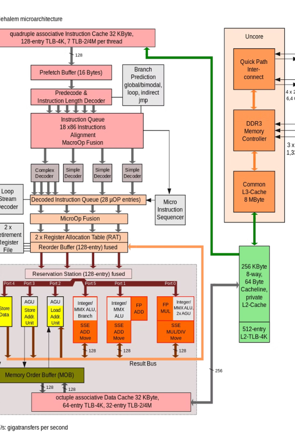

2.1 Organización del Procesador: Fundamentos y Arquitectura
Esta presentación explorará los fundamentos y la arquitectura de la organización del procesador, un pilar crucial en el rendimiento de cualquier sistema computacional. Veremos la evolución desde arquitecturas simples hasta los complejos sistemas multinúcleo actuales. El objetivo es proporcionar una visión clara de cómo los componentes clave interactúan para ejecutar instrucciones y procesar datos.
La ALU es el corazón del procesador, encargada de realizar operaciones aritméticas (suma, resta, multiplicación, división) y lógicas (AND, OR, NOT). Las ALUs modernas pueden ejecutar operaciones complejas, como cálculos de coma flotante. Su eficiencia impacta directamente la velocidad de procesamiento.
La CU coordina la ejecución de instrucciones, siguiendo el ciclo "fetch, decode, execute". Determina qué instrucción se debe buscar, cómo decodificarla y a qué unidades funcionales asignarla. La CU puede implementarse mediante microprogramación o cableado fijo, cada uno con sus propias ventajas y desventajas.
Los registros son pequeñas áreas de almacenamiento de alta velocidad que se utilizan para guardar datos, direcciones e información de control. Existen registros de propósito general, punteros de pila y contadores de programa. La jerarquía de registros, como las cachés L1, L2 y L3, es fundamental para acelerar el acceso a los datos.
El procesador interactúa constantemente con la RAM para leer y escribir datos e instrucciones. La latencia de acceso a lamemoria puede ser un cuello de botella, por lo que se emplean diversas estrategias para mitigarla, como el uso de cachés.
El procesador interactúa constantemente con la RAM para leer y escribir datos e instrucciones. La latencia de acceso a lamemoria puede ser un cuello de botella, por lo que se emplean diversas estrategias para mitigarla, como el uso de cachés.
La memoria virtual permite al procesador acceder a más memoria de la que está físicamente disponible. Se utiliza un sistema de traducción de direcciones, con tablas de páginas y el TLB (Translation Lookaside Buffer) para acelerar el proceso.
El procesador interactúa constantemente con la RAM para leer y escribir datos e instrucciones. La latencia de acceso a lamemoria puede ser un cuello de botella, por lo que se emplean diversas estrategias para mitigarla, como el uso de cachés.
CISC (Complex Instruction Set Computing) como Intel x86, se caracteriza por un mayor número de instrucciones, más complejas. RISC (Reduced Instruction Set Computing) como ARM, tiene un menor número de instrucciones, más simples.
Los modos de direccionamiento especifican cómo se calculan las direcciones de memoria para acceder a los datos. Ejemplos: directo, indirecto, indexado.
Concepto de Segmentación La segmentación (pipelining) divide la ejecución de una instrucción en varias etapas, permitiendo que múltiples instrucciones se ejecuten simultáneamente. Esto aumenta el rendimiento del procesador.
Etapas de Segmentación Un ejemplo común es una segmentación de 5 etapas: IF (Instruction Fetch), ID (Instruction Decode), EX (Execute), MEM (Memory Access), WB (Write Back).
Riesgos y Soluciones La segmentación enfrenta riesgos como dependencias de datos y control. Se utilizan técnicas como el adelantamiento (forwarding), la predicción de saltos y la inserción de burbujas (stalling) para mitigar estos riesgos. La segmentación superescalar permite ejecutar múltiples instrucciones en paralelo.
Multinúcleo vs. Multiprocesamiento La arquitectura multinúcleo integra varios núcleos de procesamiento en un mismo chip, mejorando el rendimiento y la eficiencia energética. El multiprocesamiento implica el uso de múltiples procesadores físicos separados.
Modelos de Memoria Existen modelos de memoria compartida, donde todos los núcleos o procesadores acceden a la misma memoria, y modelos de memoria distribuida, donde cada procesador tiene su propia memoria local.
Programación Paralela La programación paralela presenta desafíos como la sincronización, la comunicación y el balance de carga. Se utilizan técnicas de sincronización como semáforos, mutexes y variables de condición.
A nivel de hardware, se utilizan técnicas como la predicción de saltos avanzada, la ejecución fuera de orden (out-of-order execution) y la ejecución especulativa.
A nivel de software, se aplican optimizaciones del compilador, uso eficiente de la caché y programación paralela.
La computación cuántica, basada en los principios de la mecánica cuántica, tiene el potencial de revolucionar la arquitectura de procesadores. .
Las arquitecturas neuromórficas se inspiran en el cerebro humano, buscando imitar su eficiencia y capacidad de aprendizaje.
Las arquitecturas neuromórficas se inspiran en el cerebro humano, buscando imitar su eficiencia y capacidad de aprendizaje.
La especialización de hardware para IA y aprendizaje automático (TPUs, NPUs) está impulsando el desarrollo de nuevos tipos de procesadores.
Un registro es una colección de datos relacionados, organizada en campos. Cada campo representa un atributo específico, almacenando un valor en un tipo de dato definido.
Los registros son una estructura fundamental en el manejo de datos, ya que permiten agrupar y organizar información de manera eficiente. Esto facilita el almacenamiento, la recuperación y el procesamiento de los datos, ya que toda la información relevante se encuentra en un mismo lugar.
Además, los registros pueden contener diferentes tipos de datos, como números, texto, fechas, imágenes, entre otros. Esto permite representar una amplia variedad de información de manera estructurada y coherente.
En resumen, los registros son una herramienta poderosa para la gestión de datos, ya que permiten organizar y almacenar información de manera eficiente y flexible, facilitando su manejo y procesamiento.
Los tipos de datos son fundamentales en la definición de un registro, ya que determinan el tipo de información que puede almacenarse en cada campo. Los tipos de datos más comunes incluyen:
int)float)char)bool)La elección del tipo de dato apropiado para cada campo depende del tipo de información que se desea almacenar. Por ejemplo, si se necesita almacenar la edad de una persona, un campo de tipo entero sería lo más adecuado. Si se requiere almacenar el precio de un producto, un campo de tipo flotante sería más apropiado.
Además de los tipos de datos básicos, algunos lenguajes de programación también ofrecen tipos de datos más complejos, como fechas, horas, cadenas de texto o incluso estructuras anidadas. Estos tipos de datos avanzados permiten representar información más diversa y específica dentro de un registro.
La selección cuidadosa de los tipos de datos es crucial para garantizar la integridad y la eficiencia de los registros. Al utilizar los tipos de datos adecuados, se puede optimizar el uso de la memoria y facilitar el procesamiento y la manipulación de los datos almacenados.
struct): C utiliza estructuras (struct) para definir registros. Proporciona control bajo nivel sobre la gestión de memoria.class): Java usa clases (class) para representar registros. Brinda características de orientación a objetos, como herencia y polimorfismo.class): Python también emplea clases (class) para crear registros. Ofrece una sintaxis más concisa y una gestión de memoria automática.short en lugar de int para almacenar números pequeños.El ciclo de instrucción es la secuencia fundamental de pasos que la CPU realiza para ejecutar un programa. Este proceso es esencial para el funcionamiento de cualquier sistema computacional, ya que permite la ejecución ordenada y controlada de las instrucciones que componen un programa. Las fases principales del ciclo de instrucción son la Búsqueda (Fetch), la Decodificación (Decode) y la Ejecución (Execute).
Este ciclo está intrínsecamente relacionado con la arquitectura de Von Neumann, donde tanto los datos como las instrucciones se almacenan en la misma memoria, permitiendo así que la CPU acceda y ejecute las instrucciones de manera secuencial. La optimización de este ciclo es crucial para mejorar el rendimiento del procesador, ya que reduce el tiempo necesario para ejecutar cada instrucción.
Durante la fase de búsqueda, la CPU recupera la siguiente instrucción desde la memoria principal. El Contador de Programa (PC) juega un papel crucial, ya que contiene la dirección de la siguiente instrucción a ser ejecutada. Una vez que la instrucción es buscada, el PC se incrementa para apuntar a la siguiente instrucción en la secuencia.
La instrucción recuperada se transfiere al Registro de Instrucción (IR), donde se almacena temporalmente para su posterior decodificación. Este proceso asegura que la CPU tenga acceso a la instrucción necesaria para su ejecución. El diagrama del flujo de datos durante esta fase muestra la interacción entre la CPU, la memoria y los registros, ilustrando cómo la instrucción es recuperada y almacenada para su procesamiento.